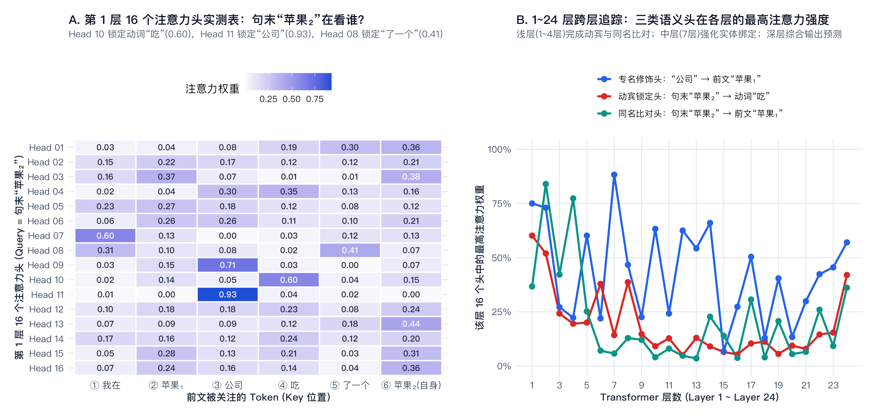

- 多头注意力（Multi-Head Attention）的底层思想：只用一种视角看句子容易“偏听偏信”。把 2048 维空间切分为 16 个独立的 128 维子空间（2048 = 16 × 128），相当于同时派出 16 位“专科侦探”，从句法、修饰、指代等 16 个维度并行审视同一句话。
- 第 1 层 16 头真机实测全表：将“我在苹果公司吃了一个苹果”喂给本地 DeepSeek 1.3B，在第 1 层中，句尾的“苹果₂”展现出惊人的专业分工——Head 10 把 60.16% 的注意力锁定在动词“吃”上；Head 11 把 92.97% 锁定在“公司”上；Head 08 用 41.41% 盯住量词“了一个”；Head 07 用 60.16% 锚定句首“我在”；Head 03 则用 36.72% 回头比对“苹果₁”！
- 全模型 384 个侦探头跨层接力：在 24 层 × 16 头 = 384 个注意力头中，动宾锁定头、专名修饰头（如 L7-H5 高达 88.28%）与同名比对头（L2-H10 高达 83.98%）跨层协同，彻底消解一词多义。
一、 为什么要“多头”？16 位专科侦探的并行会诊
上一期我们看到，词向量经过 WQ, WK, WV 线性旋转后，模型把 [1, 6, 2048] 切分成了 [1, 16, 6, 128]——即劈成 16 个注意力头（Heads），每头 128 维。
为什么不直接用 2048 维算一次总点积？因为指数函数 Softmax 具有强烈的“赢家通吃”效应：如果只算一次总分（单头注意力），最高分的那个词会吞掉绝大部分概率，导致当前词只能盯住前文某 1 个词，漏掉其他重要线索！
而切成 16 个头，就是通过线性旋转把词向量投影到 16 个互不干扰的 128 维子空间里，各自独立算点积、独立做 Softmax。这就好比组织了一场 16 位专科侦探的联合会诊：在阅读“我在苹果公司吃了一个苹果”（[①我在, ②苹果₁, ③公司, ④吃, ⑤了一个, ⑥苹果₂]）时，有的头专查“谁是我的动作谓语”，有的头专查“谁是修饰我的量词”，有的头专查“前文有没有同名词汇”，最后再把 16 份 128 维情报拼回 2048 维！
二、 真机解剖第 1 层：句尾“苹果₂”在 16 个头里分别看到了谁？
我们在本地运行 deepseek-coder-1.3b-base，输入“我在苹果公司吃了一个苹果”，将第 1 层（Layer 1）全部 16 个注意力头中句尾“⑥苹果₂”对前文 6 个位置的注意力权重完整导出（每行前 6 列概率和恒为 1.00，倒数第二列附测该头中“③公司 → ②苹果₁”的绑定权重）：
| 第 1 层注意力头 | 看 ①我在 | 看 ②苹果₁ | 看 ③公司 | 看 ④吃 | 看 ⑤了一个 | 看 ⑥苹果₂(自身) | 附：③公司 → ②苹果₁ | 该注意力头的“侦探专长”实测诊断 |
|---|---|---|---|---|---|---|---|---|
| Head 01 | 0.0294 | 0.0435 | 0.0840 | 0.1895 | 0.2988 | 0.3555 | 0.4258 | 邻近滑窗头：关注自身与紧邻的前词“了一个” |
| Head 02 | 0.1455 | 0.2246 | 0.1748 | 0.1240 | 0.1201 | 0.2109 | 0.5234 | 全局匀光头：把注意力均匀洒向全句每个词 |
| Head 03 | 0.1621 | 0.3672 | 0.0664 | 0.0082 | 0.0146 | 0.3809 | 0.6211 | ★同名回溯头：以 36.72% 跨越半句回头比对“苹果₁”！ |
| Head 04 | 0.0245 | 0.0378 | 0.2988 | 0.3496 | 0.1309 | 0.1602 | 0.6992 | 复合主干头：同时抓谓语“吃”(35%) 与场景“公司”(30%) |
| Head 05 | 0.2275 | 0.2734 | 0.1826 | 0.1216 | 0.0762 | 0.1182 | 0.2988 | 前文扫描头：侧重扫描句首前半段背景 |
| Head 06 | 0.0591 | 0.2559 | 0.2637 | 0.1138 | 0.1006 | 0.2061 | 0.4414 | 专名打包头：把“苹果₁+公司”成对打包吸收 |
| Head 07 | 0.6016 | 0.1260 | 0.0006 | 0.0276 | 0.1162 | 0.1299 | 0.1445 | ★句首锚点头：以 60.16% 死死锚定句首主语“我在” |
| Head 08 | 0.3125 | 0.1045 | 0.0830 | 0.0203 | 0.4141 | 0.0654 | 0.2139 | ★数量修饰侦探：以 41.41% 最高权重锁死量词“了一个”！ |
| Head 09 | 0.0332 | 0.1484 | 0.7070 | 0.0342 | 0.0018 | 0.0747 | 0.1406 | 场景地点侦探：以 70.70% 重度提取地点词“公司” |
| Head 10 | 0.0208 | 0.1396 | 0.0498 | 0.6016 | 0.0400 | 0.1484 | 0.7500 | ★王牌动宾侦探：“苹果₂”以 60.16% 锁死“吃”；“公司”以 75% 锁死“苹果₁”！ |
| Head 11 | 0.0061 | 0.0010 | 0.9297 | 0.0415 | 0.0209 | 0.0010 | 0.0006 | ★极端环境锁定头：高达 92.97% 火力集中抽取“公司” |
| Head 12 | 0.0986 | 0.1787 | 0.1787 | 0.2295 | 0.0791 | 0.2363 | 0.4180 | 均衡融合头：兼顾自身(23.6%)、动作“吃”(23.0%)与前文 |
| Head 13 | 0.0747 | 0.0942 | 0.0889 | 0.1211 | 0.1846 | 0.4355 | 0.3301 | 自身保底头：以 43.55% 守住“苹果₂”自身词义底色 |
| Head 14 | 0.1689 | 0.1602 | 0.1157 | 0.2383 | 0.1157 | 0.2021 | 0.3848 | 温和谓语辅助头：以“吃”为重心向全句平缓铺开 |
| Head 15 | 0.0503 | 0.2773 | 0.1289 | 0.2090 | 0.0276 | 0.3086 | 0.5586 | 双苹果对照头：在自身、前一个苹果与“吃”之间三角比对 |
| Head 16 | 0.0664 | 0.2422 | 0.1562 | 0.1406 | 0.0369 | 0.3574 | 0.6602 | 名词短语粘合头：辅助将“苹果₁+公司”粘合为专名短语 |

这张实测表把大模型“理解上下文”的底牌照得一清二楚——哪有什么玄学，全靠 16 个头的精密分工：
- Head 10（王牌动宾猎手）：让“苹果₂”投出 60.16%（
0.6016） 的压倒性权重锁定动词“吃”（确认自己是被吃的食物）；同时让“公司”投出 75.00%（0.7500） 锁定“苹果₁”（焊死科技公司专名）！ - Head 11 & Head 09（环境猎手）：分别用 92.97%（
0.9297） 和 70.70% 提取地点“公司”。 - Head 08（量词猎手）：用 41.41%（
0.4141） 锁定数量修饰词“了一个”。 - Head 07（句首锚点）：用 60.16% 锁定主语“我在”；Head 03 则用 36.72% 回头比对“苹果₁”。
三、 1~24 层王牌侦探头榜单：384 个头的跨层协同
在全模型 24 层 × 16 头 = 384 个注意力头中，我们扫描整理出了跨层接力的《王牌专科侦探头榜单》：
| 侦探专科类别 | 核心语义配对任务 | 冠军王牌头 (实测权重) | 亚军王牌头 (实测权重) | 季军/深层接力头 (实测权重) | 跨层协同消歧规律 |
|---|---|---|---|---|---|
| ① 动宾锁定头 | ⑥苹果₂ → 动词 ④吃 | Layer 1 - Head 10 (60.16% / 0.6016) | Layer 2 - Head 09 (51.95% / 0.5195) | Layer 24 - Head 08 (41.99% / 0.4199) | 浅层(L1/L2)第一时间锁死“吃苹果”，直到第24层仍在重申动宾关系以预测下一词 |
| ② 专名修饰头 | ③公司 → 前缀 ②苹果₁ | Layer 7 - Head 05 (88.28% / 0.8828) | Layer 1 - Head 10 (75.00% / 0.7500) | Layer 2 - Head 02 (73.05% / 0.7305) | 从 L1(75%)、L2(73.05%) 到 L7(88.28%)，把“苹果₁”彻底焊死在“公司”身上 |
| ③ 同名比对头 | ⑥苹果₂ → 比对 ②苹果₁ | Layer 2 - Head 10 (83.98% / 0.8398) | Layer 4 - Head 09 (77.34% / 0.7734) | Layer 1 - Head 03 (36.72% / 0.3672) | L2-H10(83.98%)与 L4-H9(77.34%)把两个“苹果”拉到一起做反差比对，迅速推开夹角 |
| ④ 数量修饰头 | ⑥苹果₂ → 量词 ⑤了一个 | Layer 14 - Head 05 (79.30% / 0.7930) | Layer 2 - Head 05 (73.83% / 0.7383) | Layer 1 - Head 08 (41.41% / 0.4141) | 浅层与中深层反复确认动作已完成且数量为单数，为续写“，然后又吃”埋下伏笔 |
正是靠着第 1 层锁死“吃”与“公司”、第 2~4 层启动高达 83.98% 的同名反差比对，两个“苹果”才在几何空间里彻底分道扬镳！
四、 384 个注意力头是如何合力消解“一词多义”的？
把上面两张真机实测表连起来看，困扰我们整整三期的终极谜题——“模型到底怎么知道前一个苹果是公司、后一个苹果是水果”——终于有了滴水不漏的答案：
- 第一步：第 1 层并行贴标签。在 Layer 1 中，10 号头同时打出了两记重拳：一方面让 3 号位的“公司”以 75.00% 的高权重死死抱住 2 号位的“苹果₁”；另一方面让 6 号位的“苹果₂”以 60.16% 的高权重紧紧抓住 4 号位的动词“吃”，同时 8 号头把 41.41% 的量词“了一个”注入“苹果₂”，11 号头把 92.97% 的场景词“公司”注入“苹果₂”。
- 第二步：第 2~4 层同名反差比对。到了 Layer 2 的 10 号头（权重 83.98%）和 Layer 4 的 9 号头（权重 77.34%），同名比对侦探登场！它让已经吸入了“吃了一个”语境的“苹果₂”，回头去和前文的“苹果₁”做正面比对，瞬间识别出“原来前一个苹果是办公地点，而我是盘中餐”，从而在几何空间里把两支向量推向不同的方向！
- 第三步：中深层持续巩固直至输出。到了第 7 层 5 号头（“公司 → 苹果₁”高达 88.28%）、第 14 层 5 号头（“苹果₂ → 了一个”高达 79.30%）直至第 24 层 8 号头（“苹果₂ → 吃”保持 41.99%），384 个头层层护航，确保句尾最终输出的张量精准预测出下一个标点与动作“，然后又吃”！
2017 年谷歌餐厅的午饭奇想——《Attention Is All You Need》
2017 年春天，尽管巴达瑙发明的注意力机制已经问世三年，但全世界所有的主流模型仍把笨重且无法并行计算的循环神经网络（RNN/LSTM）当成绝对主角，只敢把注意力当成一个辅助插件。
一天中午，在加州山景城 Google Brain 园区餐厅吃午饭时，阿希什·瓦斯瓦尼（Ashish Vaswani）、诺姆·沙泽尔（Noam Shazeer）、伊利亚·波洛苏欣（Illia Polosukhin）、雅各布·乌兹科雷特（Jakob Uszkoreit）等 8 位年轻学者（后来被尊称为“Transformer 八子”）聊起了一个疯狂的念头：“既然 RNN 串行计算这么慢，而真正帮模型找准上下文的功臣其实是注意力——那我们干脆把所有的 RNN 和卷积网络（CNN）统统扔进垃圾桶，只用纯注意力机制来搭建整个大模型！”
为了解决单头注意力在 Softmax 后只会死盯一个词的缺陷，团队里的工程奇才诺姆·沙泽尔等人设计了把向量切成多份子空间并行会诊的多头注意力（Multi-Head Attention）。在给论文起名时，团队里的利昂·琼斯（Llion Jones）借用披头士乐队那首家喻户晓的名曲《All You Need Is Love》，写下了 AI 史上最霸气的标题——《Attention Is All You Need（注意力就是你所需要的一切）》，一举开启了今天的大模型黄金时代。
那 384 个注意力头凭什么知道“10 号头该看动词‘吃’”、“8 号头该看量词‘了一个’”？要知道，大模型在刚出厂、未训练的第一秒，体内 13.5 亿个参数全都是毫无意义的随机噪音！下一期，我们将揭开【训练过程】的终极奥秘——看一张随机乱码表如何在亿万次试错中进化出 384 位神探！
- BertViz 多头注意力交互神器（GitHub
jessevig/bertviz）：鼠标悬停即可交互式查看任意句子在各层各头的注意力连线。 - 经典原著《Attention Is All You Need》（
arxiv.org/abs/1706.03762）：翻到第 4 页公式，用高中点积知识即可 100% 读懂。 - 动手实验：运行 DeepSeek 1.3B 时开启
output_attentions=True，测试“他拿着苹果手机吃苹果”的 16 头权重！
deepseek-coder-1.3b-base (32,256 词表 · 24 层 · 13.46 亿参数) 实测生成